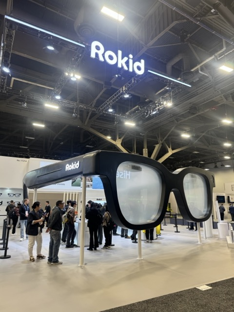
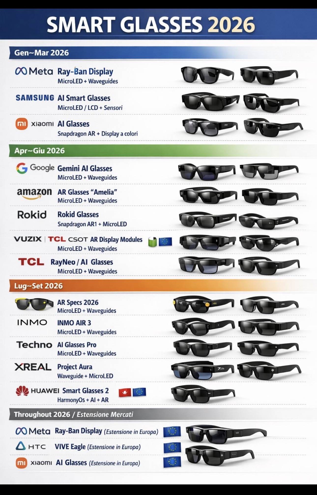
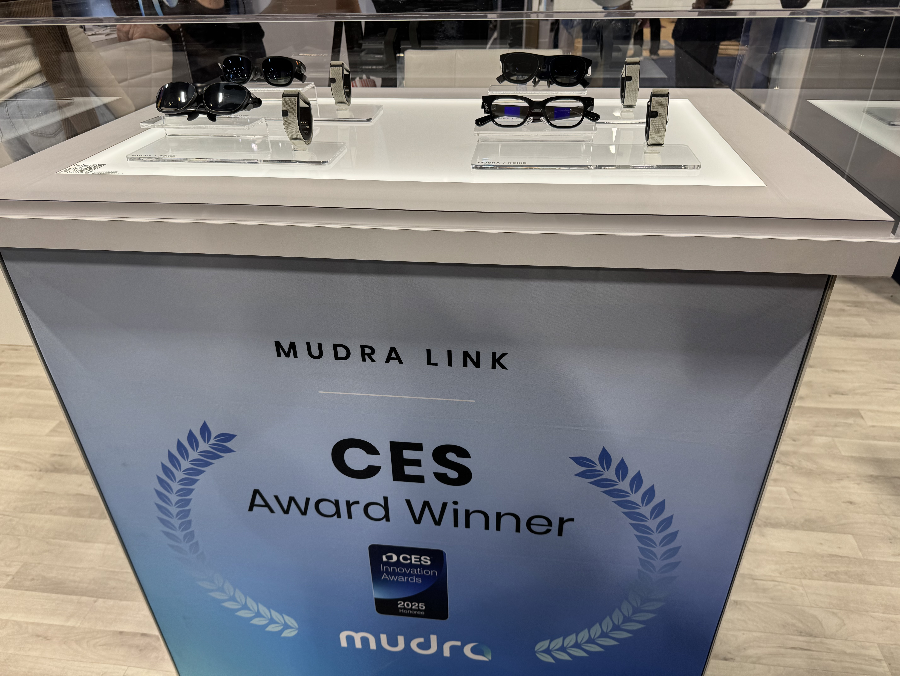

I wear Meta Ray-Bans every day. So when I walked the floor at CES 2026 and saw smart glasses at what felt like every other booth, it felt personal.
Not because the hardware has arrived. It hasn't — not fully. But for the first time, the rest of the world seems to be catching up to something spatial computing practitioners have been saying for years: the next screen isn't in your hand. It's on your face.
The Glasses Are Multiplying

The sheer number of smart glasses companies on the floor was staggering. Not just Meta. MOJIE. Emdoor. XREAL. Even Realities. Microlumin. RayNeo. TOZO. Namibox. Rokid had a pair of giant glasses you could walk under as a booth entrance — and a crowd packed around their "World's #1 Crowdfunded AI & AR Glasses."
One of the most useful things I brought home from CES wasn't a product — it was a roadmap. Someone had compiled every major smart glasses announcement expected in 2026 by quarter: Meta Ray-Ban Display (MicroLED + waveguides), Samsung AI Smart Glasses, Google's return to AR, Amazon's rumored "Amelia" glasses, XREAL Project Aura, and more. It's a lot. The platform race is on.

I attended a session called "Smart Glasses: Is the Future Face Computing?" The panel was full. The question wasn't rhetorical. The consensus: yes — but which platform wins depends less on hardware specs and more on which AI ecosystem you're already living in. The glasses you pick will largely depend on the AI buddy you prefer.
That's a lock-in story, not a hardware story. And it changes how you should think about choosing a device.
The Use Cases Are Getting Specific
What surprised me wasn't the flagship devices — it was the niche ones.
Namibox AI Learning Glasses — billed as the world's first AI learning glasses — are built specifically for classroom note-taking and multilingual vocabulary learning. Spanish, French, Chinese. They're designed to fight the forgetting curve. It's a narrow use case, and that's exactly the point.
TOZO's VIZO AIX Pro had a tagline I wrote down: "See it. Say it. Capture it." 12MP camera, voice wake-up, AI assistant, 24-hour battery, 49 grams. No, it's not a general-purpose AR device. It's for people who need hands-free capture and an AI that listens.

My favorite discovery of the whole show was Mudra Link — a CES Innovation Award winner. It's a neural wristband that lets you control AR glasses using micro-gestures from your fingers. No voice commands. No touchpads. Just intention translated into action. "Built for All" was their tagline, and the accessibility angle felt genuine, not performative.
The pattern I kept noticing: the near-term winners in smart glasses aren't trying to do everything. They're building bespoke tools for a specific high-value workflow and doing it really well.
What I'm Taking Away
The platform bet is real. Every glasses company at CES was also selling an AI ecosystem. The question isn't which glasses have the best specs — it's which AI will be most useful in your daily life. I'm already in the Meta ecosystem because of my Ray-Bans. That relationship is compounding. Switching costs are real.
Fashion is finally being taken seriously. Even Realities had glasses that looked like something you'd actually wear. MOJIE had ten-plus frame styles. The "Google Glass problem" — looking like you're wearing a prop — is being actively designed away. That matters enormously for mainstream adoption.
The next screen is on your face. CES 2026 just made that harder to argue with.
Also at CES: robots, autonomous taxis, and the makers taking over the floor. Read part two →